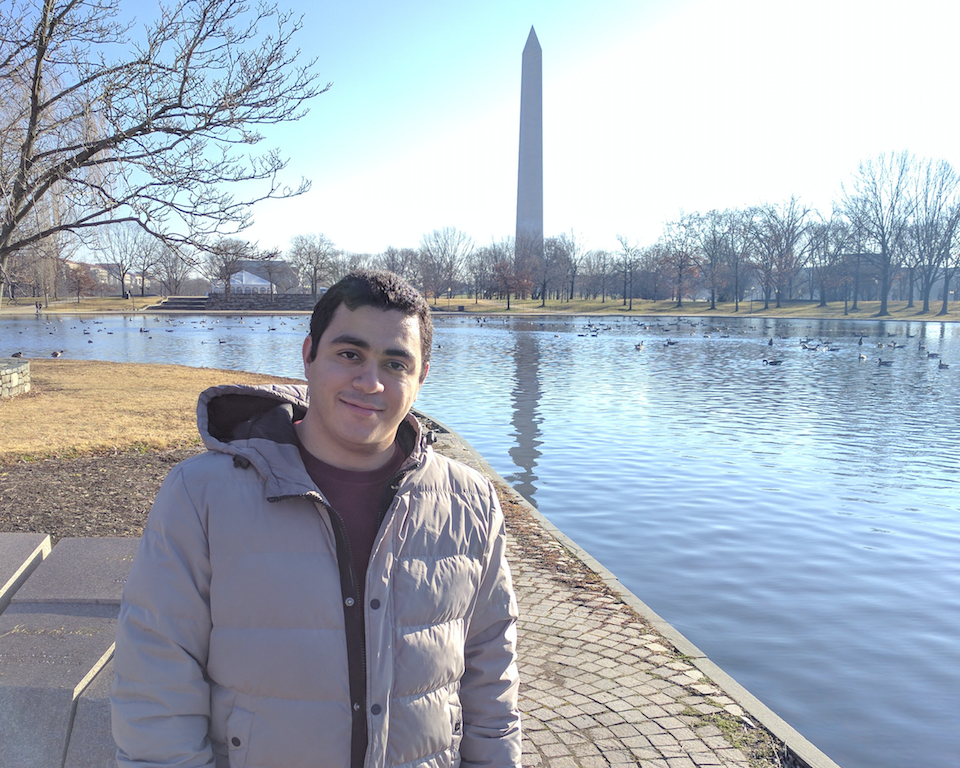

Ahmed Bedewy

News:
-
March 2017:
Our paper on age-of-information in multihop networks got accepted for ISIT 2017.
About me
I am a PhD student at the ECE Department, Ohio State University working with Prof. Ness Shroff and Dr.Yin Sun.
Before joining OSU, I received my Bachelor's and Masters degrees from Alexandria Univeristy in Electronics and Communications Engineering in 2011 and 2015, respectively where I was supervised by Prof. Karim Seddik.
Awards and Honors
- Ranked 1st over Electrical Engineering Class of 2011, Alexandria University.
- Awarded the Prof. Abdelsamie Mustafa prize for the 1st student over Electrical Engineering Class of the Faculty of Engineering, Alexandria University in 2011.
- Awarded Certificate of Merit, First Class Honors, for being one of the top ten students (1st at last three years) in Electrical Engineering during my undergraduate studies (2006-2011).
- Student Travel Grant to attend IEEE ISIT, 2016.
Research Interests
My current research interest is in Data Freshness Optimization. An important metric of data freshness is "Age-of information" which is defined as the time elapsed since the freshest packet was generated. We design low complexity scheduling policies that can achieve optimality or near optimality in general system setting.
My recent talks:
Age-of-Information: Optimizing Data Freshness, Throughput, and Delay in Multi-Server Information-Update Systems [slides]
Age-of-Information: Age-Optimal Information Updates in Multihop Networks [slides]
Contacts
| Office: | 661 Dreese Labs |
| Tel: | +1-614-477-7613 |
| Email: | bedewy.2@osu.edu |